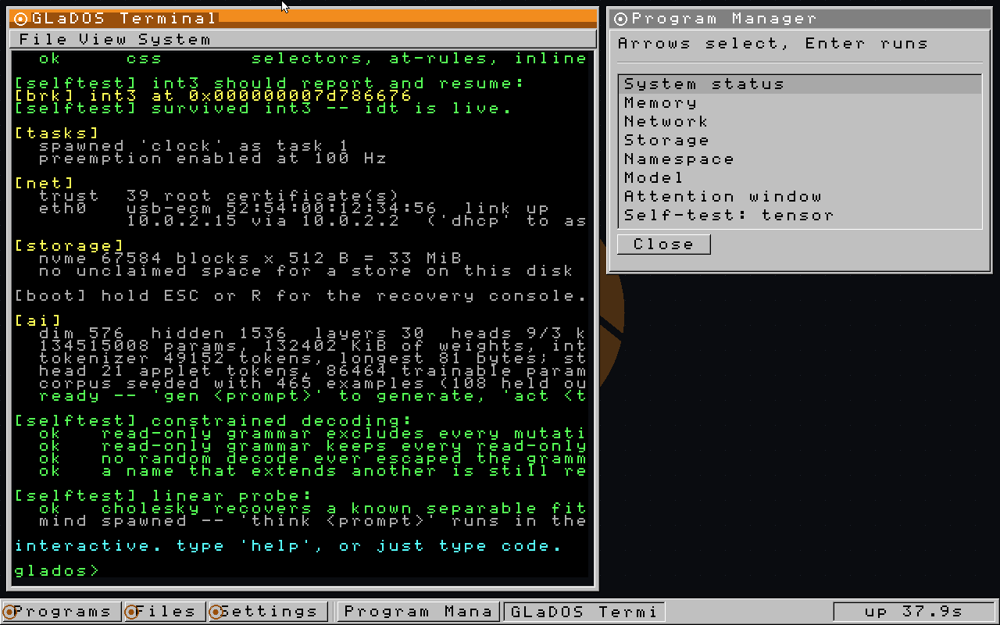

The Windows 3.1 desktop
There is no graphics library anywhere in this. UEFI's Graphics Output Protocol hands the kernel four numbers — a base address, a width, a height and a stride — and everything above them is written by hand: the glyph renderer, the bevel primitives, the window manager, the wallpaper geometry and the taskbar. There is no VGA text mode to retreat to either, because the machine boots UEFI with no CSM, so there is no INT 10h, no text buffer at 0xB8000, and no VGA BIOS. Pixels are the only output device that exists.
Windows 3.1 chrome, precisely
The look is not an approximation of the era, it is the actual construction:
- A
#C0C0C0face colour on every panel. - Two-pixel bevels — white along the top and left, dark grey along the bottom and right — for a raised surface, and the same two colours swapped for a sunken one. That single trick is most of the visual language.
- Title bars that fill with the selection colour when focused and go grey when they are not.
- Hard rectangles throughout: no anti-aliasing, no shadows, no rounded corners, no alpha.
Over that sits the Aperture palette and its amber accents, with a wallpaper computed as vector geometry because the kernel has no image decoder.
The style and the constraint are the same decision. A raised panel with a sunken trough, four colours and one bitmap font is simultaneously the Windows 3.x dialog vocabulary and the cheapest set of operations a framebuffer can perform. Nothing here needs blending, scaling or sub-pixel positioning, which is why the boot splash and the window manager can share a drawing model despite one of them running before there is a heap.
The window manager, and its one idea
Z-order is focus. There is no separate focused-window pointer kept in agreement with the stacking order, because the front window is the focused window by definition, and raising a window is how you focus it. That is one fact where most systems carry two, and two facts about the same thing eventually disagree.
The terminal is a window on the desktop and not the other way round, which sounds like a detail and is the whole design. A shell that draws a dialog over itself is a program with a pop-up; a desktop that hosts a terminal alongside other windows is an environment. The console already knew how to live inside a rectangle and reflow to it, so the terminal needed no special case at all — it is a window whose contents happen to be a character grid.
Repainting is total, back to front, on every change: no damage tracking, no dirty rectangles. That is affordable because of what causes a change. Nothing here animates, so a repaint happens when a key is pressed or the mouse moves, which is at most a few times a second, and 1280×800 is about a million stores into a write-back-mapped aperture. Damage tracking would buy nothing measurable and would cost the property this code cannot afford to lose, which is being obviously correct — the entire category of "stale pixels from a window that used to be there" cannot occur if there is no such thing as a partial repaint.


A bug that only a screenshot could find
The console wrote straight into its own rectangle with no knowledge of what might be stacked on top of it, so a file browser opened over the terminal was gradually eaten from underneath by shell output. Nothing in the serial log showed this. The log was correct, the window manager's internal state was correct, and the screen was wrong, which is a category of bug that only exists once you have pixels.